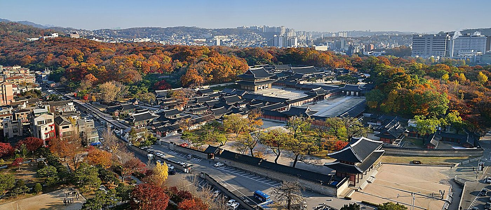
Korea today
South Korea has a population of about 51.8 million (2025), and half of it lives in Seoul and its metropolitan area. Over 5,000 years Koreans have built a distinctive culture, with a deep respect for learning that still runs through daily life. In 2025 Korea welcomed a record of more than 18 million international visitors, and it is one of the world’s leading destinations for medical training.
오늘의 한국
대한민국 인구는 약 5,182만 명(2025)이며 그 절반이 서울과 수도권에 삽니다. 5천 년 역사 속에서 고유한 문화를 이루었고, 배움을 중시하는 전통이 지금도 일상에 흐릅니다. 2025년 방한 외국인은 1,800만 명을 넘어 역대 최대였고, 한국은 의료 교육의 세계적인 목적지입니다.
The Korean alphabet, created in 1443 under King Sejong. Easy to learn: most visitors read signs after an afternoon.
1443년 세종대왕이 창제한 문자입니다. 배우기 쉬워 대부분의 방문객이 반나절이면 간판을 읽습니다.
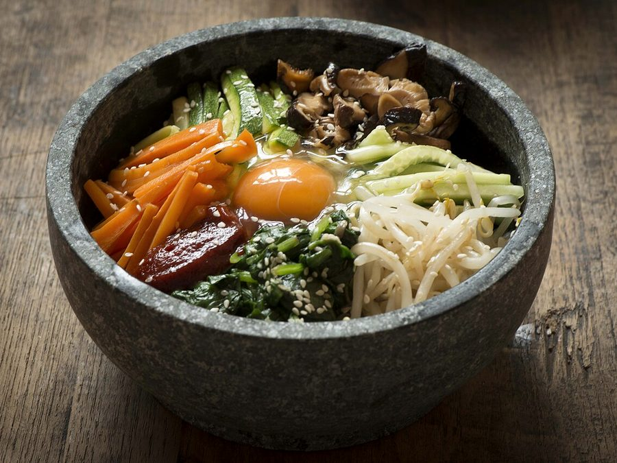
Korean food is built on fermentation. Try bibimbap, galbi, naengmyeon and Gwangjang Market street food.
발효가 한식의 바탕입니다. 비빔밥, 갈비, 냉면, 광장시장 길거리 음식을 꼭 맛보세요.
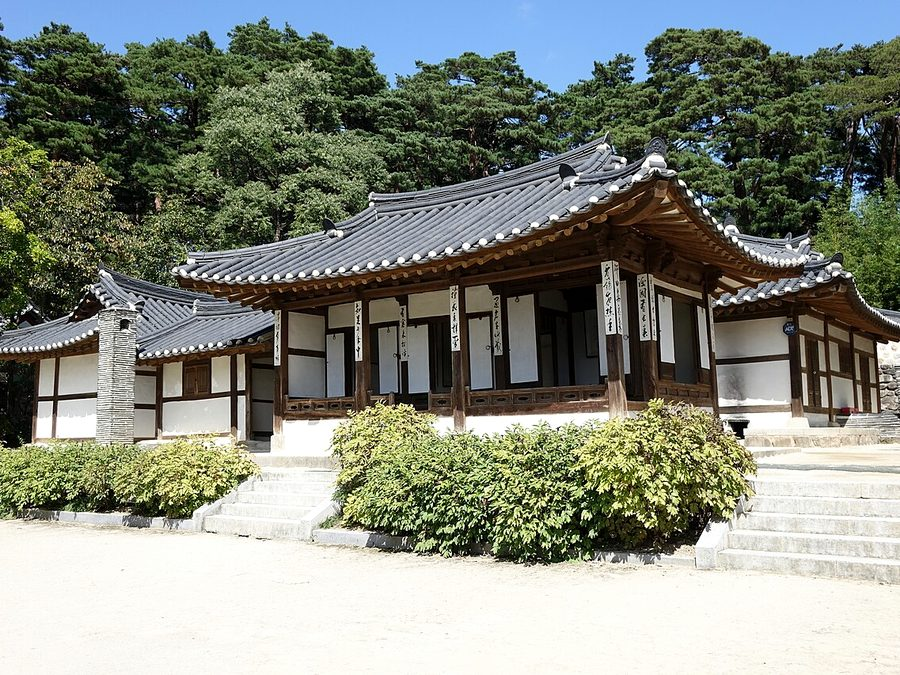
Visitors wearing hanbok enter the royal palaces free of charge. Hanok houses still shape Bukchon.
한복을 입으면 고궁 입장이 무료입니다. 북촌에는 지금도 한옥이 모여 있습니다.
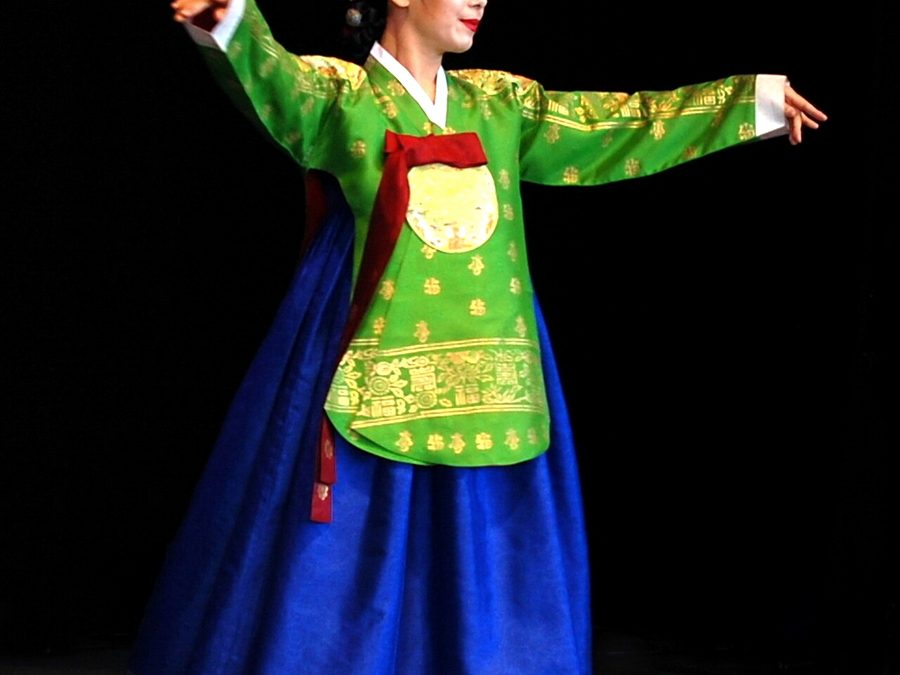
Korean music, drama and film reach a global audience; concerts and shows run every night.
한국 음악, 드라마, 영화가 전 세계에서 사랑받고, 매일 밤 공연이 이어집니다.
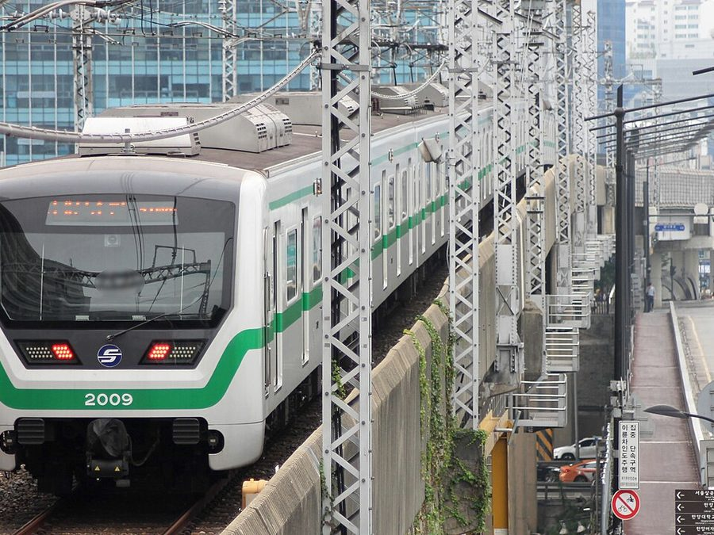
Fast 5G and free Wi-Fi almost everywhere, including the subway. eSIMs are sold at the airport.
지하철을 포함해 거의 모든 곳에서 5G와 무료 와이파이를 쓸 수 있고, 공항에서 eSIM을 살 수 있습니다.
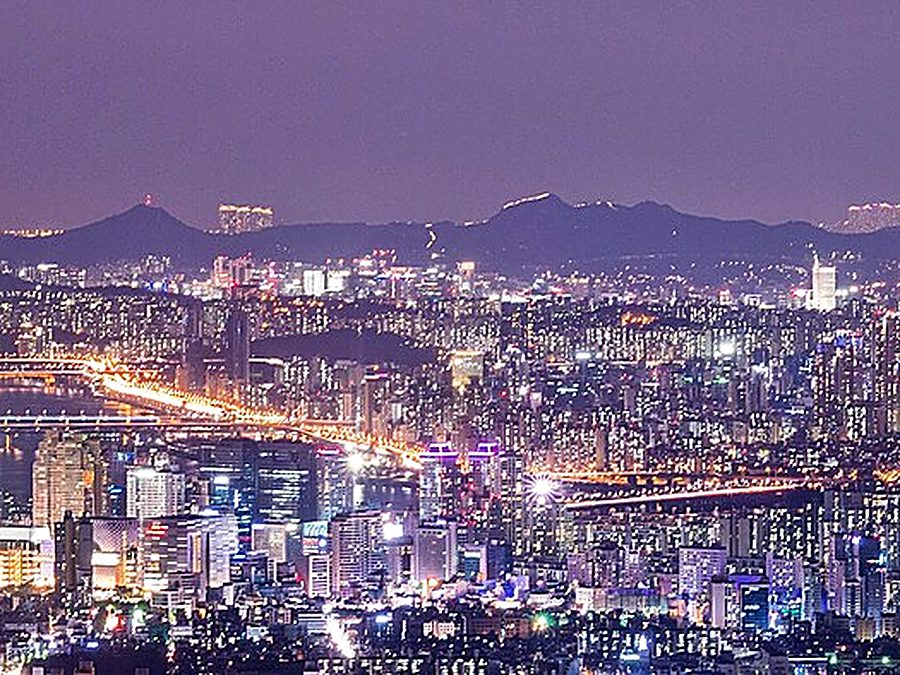
Seoul is one of the safest large cities in the world; streets are lively and well lit late at night.
서울은 세계에서 가장 안전한 대도시 중 하나로, 밤늦게까지 거리가 밝고 활기찹니다.
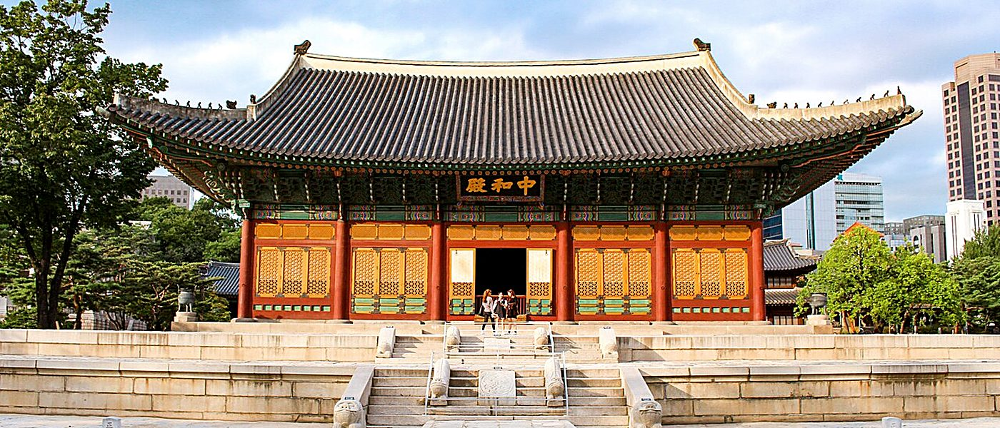
Seoul
Seoul has been the capital of Korea for over 600 years. The Han River divides the city: the north holds the palaces and old neighbourhoods, the south the business districts. Palaces and temples stand beside one of Asia’s most modern skylines.
서울
서울은 600년 넘게 한국의 수도였습니다. 한강을 경계로 북쪽에는 고궁과 옛 동네가, 남쪽에는 업무 지구가 있으며, 고궁과 사찰이 아시아에서 가장 현대적인 스카이라인과 어우러져 있습니다.
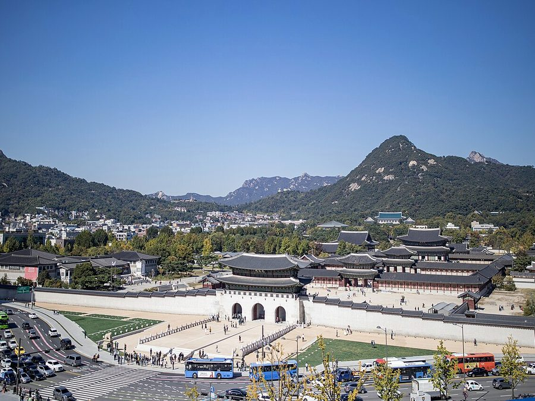
Gyeongbokgung and Changdeokgung palaces, Jongmyo Shrine, Bukchon Hanok Village.
경복궁, 창덕궁, 종묘, 북촌 한옥마을.
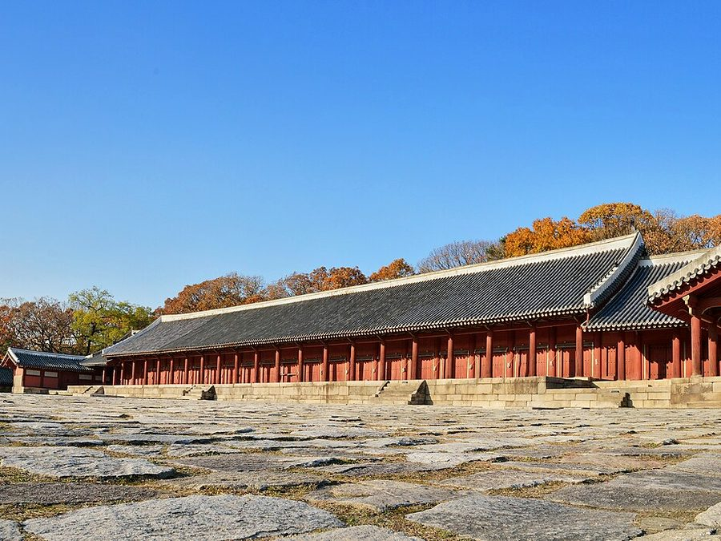
Jongmyo Shrine, Changdeokgung Palace, the Royal Tombs of the Joseon Dynasty and Namhansanseong.
종묘, 창덕궁, 조선왕릉, 남한산성.
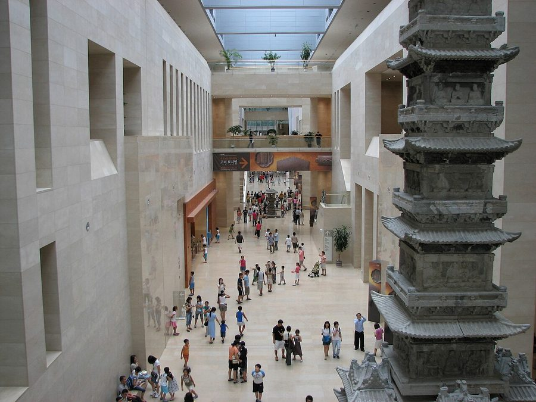
The National Museum of Korea, Leeum, MMCA Seoul and hundreds of galleries.
국립중앙박물관, 리움미술관, 국립현대미술관 서울관과 수백 개의 갤러리.
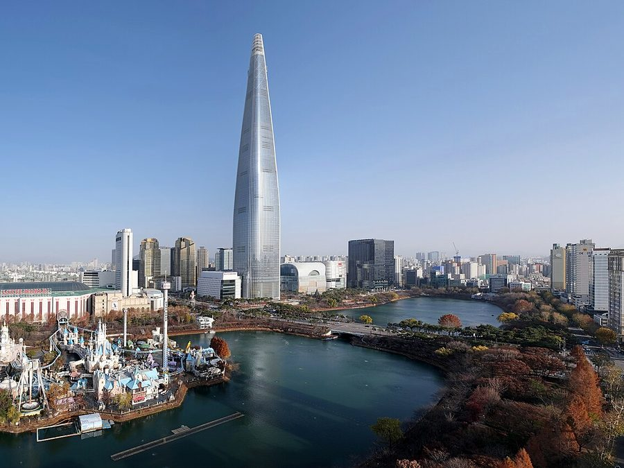
Seongsu-dong, Hongdae, Jamsil, Dongdaemun Design Plaza and the Hangang river parks.
성수동, 홍대, 잠실, 동대문디자인플라자, 한강공원.
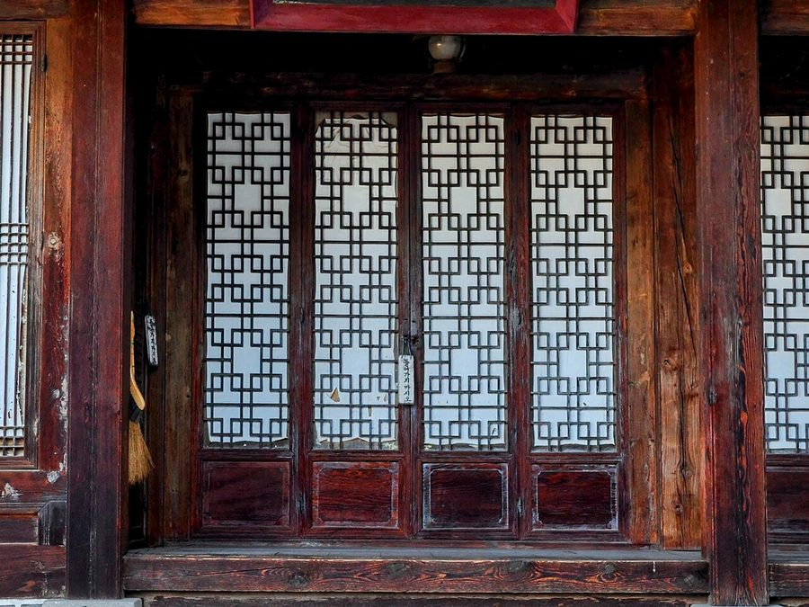
Sinchon and Yeonnam-dong, a short walk from Yonsei, are full of cafés, bookshops and restaurants.
연세대에서 걸어갈 수 있는 신촌과 연남동에는 카페, 서점, 식당이 가득합니다.
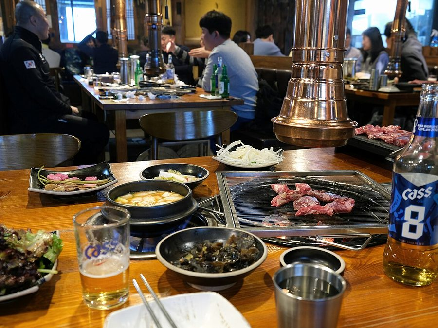
Korean barbecue, kimchi stew, bibimbap and fried chicken; many restaurants have English QR menus.
고기구이, 김치찌개, 비빔밥, 치킨. 영어 QR 메뉴가 있는 식당이 많습니다.
Photos: Wikimedia Commons (CC BY-SA). To be replaced with licensed images before launch.